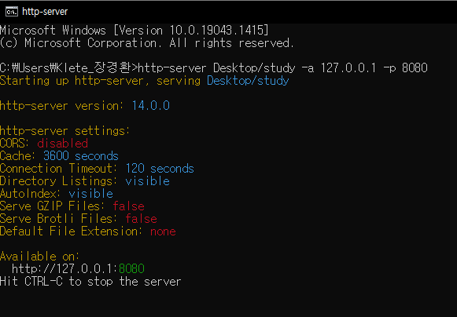

바탕화면에 study 폴더를 생성해 파일들을 한 폴더로 정리했고, web server를 사용해 web page를 띄워볼 것이다
- 먼저node.js를 다운 받는다
-
GitHub - http-server에서 다운 받은 후 cmd를 열어
install --global http-server를 입력한다
그러면 cmd 어느 폴더에서든 http-server를 실행할 수 있다
폴더는 C:\Users\Klete_장경환\node_modules에 저장된다 -
설치 후http-server -a 127.0.0.1 -p 8080이라고 입력하면 server가 실행된다
-a → 사용할주소
-p → 열고 싶은port 번호
폴더의 경로를 추가하면 그 폴더의 index.html이 실행된다 →http-server Desktop/study -a 127.0.0.1 -p 8080

-
URL창에주소:port 번호를 입력한다

만약 index.html이 없다면 해당 폴더에서 html파일을 선택할 수 있다